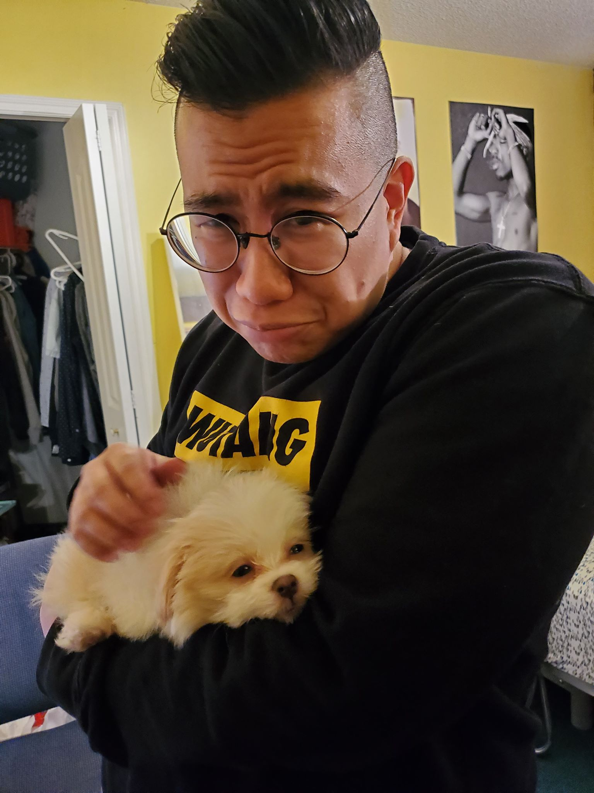
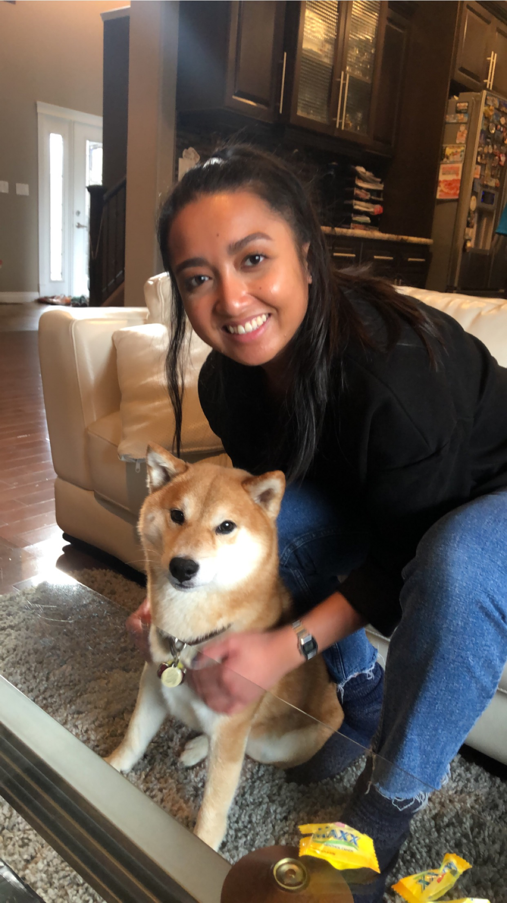
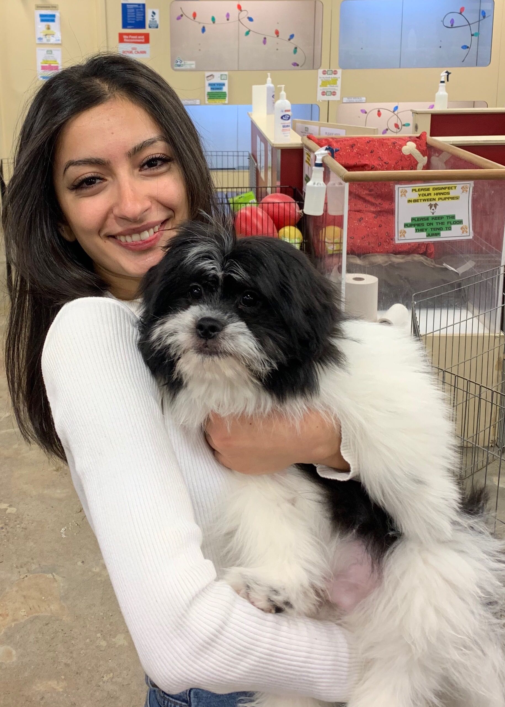
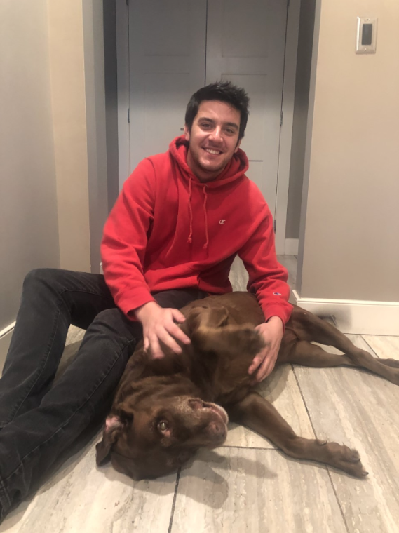

Daniel Tiu
 Hello! I’m Daniel and I am currently a Computer Science student at the University Of Calgary! In regards to computer science, the fields I’m currently interested in are UI/UX, Database creation and management, systems security, and app development. Outside of computer science I have interests in philosophy, ethics, international relations, and history. My personal hobbies include olympic weightlifting, powerlifting, bodybuilding, retro video game collecting and restoration, reading and watching things in the Sci-Fi and Fantasy genre, attending Hip Hop and R&B concerts, eating out at new and highly acclaimed restaurants around the city, and travelling! I hope to one day own a dog, because the love of a dog is one of the purest forms of love. The picture of me is my younger sister’s new born dog Coco. I already love Coco.
Marela Carlos
 I am in my third year of the Computer Science program at the University of Calgary. I have a black pug named Pablo. He's 5 years old. In my free time, I like to draw and paint. I will have phases where I will read and so I've been reading 11/22/63 by Stephen King for 4 years. I am scared of the Earth's current state and am hoping my contributions help so that I can finish my degree and get a job relating to it. Here is me with my friend's shiba inu, Riku.
Sophia Le
 Sophia is a diligent and passionate Computer Science undergraduate student with a strong foundation in mathematics, logical analysis, and computing.
She has academic interests grounded in UX/UI design, mobile application development, cloud computing, nanoscience, information security and privacy, and data science. Her current projects are centered on human-computer interactions
and web development.
Sophia is a diligent and passionate Computer Science undergraduate student with a strong foundation in mathematics, logical analysis, and computing.
She has academic interests grounded in UX/UI design, mobile application development, cloud computing, nanoscience, information security and privacy, and data science. Her current projects are centered on human-computer interactions
and web development.
Shanty Kamal
 I’m finishing up my third year in my computer science degree at the University of Calgary. I love summer and hate winter so Calgary and I are not clicking well... I hope to move to the 6ix or the west coast where there will be a wider variety of opportunities in my field (and hopefully warmer weather?). I love films and my favorite directors include Wes Anderson and Quentin Tarantino (I know I know... mainstream but I believe in giving credit where it’s due). Despite how much I enjoy what I do, my biggest concern right now is not being able to find a job in this field that also allows me to pursue my passion of helping people and working with children. I hope to one day adopt a husky but in the meantime here is me with an anonymous cutie.
Matthew Sardinha
 I am a computer science currently in my third year at UofC. My interests relating to Computer Science include app design and development, game development and software development in general. I hope in the future to be able to work in an environment which I can attribute my abilities in software development to my hobbies. I love to play guitar and am an avid gamer. While I don’t have dogs, many of my close friends whom I’ve grown up with do, and as such I have become accustomed to loving them just as one of my own.Here is me with one of my good friend’s dogs, Boogie